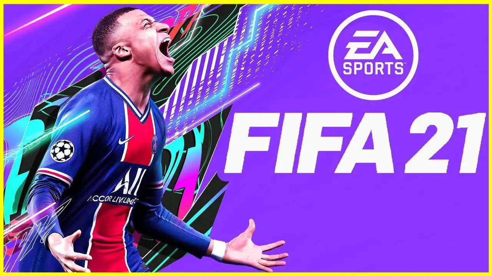
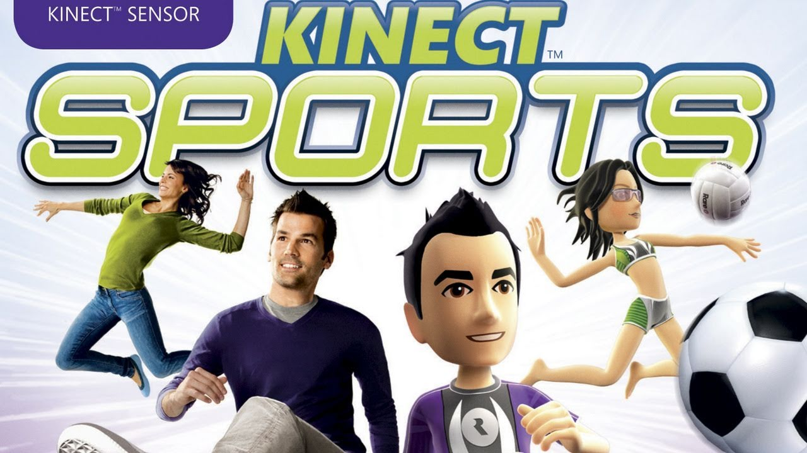
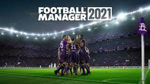

GryPC.PL
GryPC.PL
Sports
Komputerowa gra sportowa to gatunek gier komputerowych, których tematyką są dyscypliny sportowe związane z aktywnością fizyczną. Gry sportowe symulują wybrane aspekty prawdziwej lub wymyślonej dyscypliny sportowej, wymagając od gracza umiejętności powiązanych ze zręcznością i myśleniem strategicznym.
Głównym trybem rozgrywki w grach związanych ze sportami zespołowymi jest zwykle wirtualny mecz, podczas którego gracz może przerwać rozgrywkę, aby, na przykład, wymienić zawodników lub opracować nową taktykę. Inne tryby gry, związane z innymi właściwościami danej dyscypliny, umożliwiają sprawdzenie zdolności i statystyk sportowców, zatrudnianie bądź sprzedawanie zawodników, zmianę posiadanego składu czy też sprawdzanie terminarza spotkań. Menu gry w takich trybach często jest ilustrowane tabelami i wykresami.
Zasady rozgrywki w grach sportowych zwykle są podobne do istniejących w prawdziwych dyscyplinach sportowych. Tryby rozgrywki zależą od dyscypliny, na przykład w symulacjach sportów zespołowych gracz może zagrać pojedyncze spotkanie, poprowadzić drużynę w jednym sezonie, turnieju albo na przestrzeni lat, w tym ostatnim przypadku często dostępne są opcje charakterystyczne dla zawodu menedżera.
Głównym trybem rozgrywki w grach związanych ze sportami zespołowymi jest zwykle wirtualny mecz, podczas którego gracz może przerwać rozgrywkę, aby, na przykład, wymienić zawodników lub opracować nową taktykę. Inne tryby gry, związane z innymi właściwościami danej dyscypliny, umożliwiają sprawdzenie zdolności i statystyk sportowców, zatrudnianie bądź sprzedawanie zawodników, zmianę posiadanego składu czy też sprawdzanie terminarza spotkań. Menu gry w takich trybach często jest ilustrowane tabelami i wykresami.
Zasady rozgrywki w grach sportowych zwykle są podobne do istniejących w prawdziwych dyscyplinach sportowych. Tryby rozgrywki zależą od dyscypliny, na przykład w symulacjach sportów zespołowych gracz może zagrać pojedyncze spotkanie, poprowadzić drużynę w jednym sezonie, turnieju albo na przestrzeni lat, w tym ostatnim przypadku często dostępne są opcje charakterystyczne dla zawodu menedżera.
Pare przykładów:

"FIFA" to seria komputerowych gier sportowych o tematyce piłki nożnej, wyprodukowanych przez kanadyjski odłam amerykańskiego przedsiębiorstwa Electronic Arts, EA Sports.
Nazwa pochodzi od organizacji FIFA, od której Electronic Arts wykupiło licencję na użycie owej nazwy. Pierwsza wersja (FIFA International Soccer) ujrzała światło dzienne w 1994 roku. Od tego czasu powstały liczne kontynuacje i podserie, między innymi FIFA Street osadzona w realiach futbolu ulicznego czy menedżer piłkarski FIFA Manager.
Od wydania gry FIFA Football 2003 seria jest polonizowana, a w grze FIFA 06 po raz pierwszy dodano polski komentarz (w rolach komentatorów: Dariusz Szpakowski
(od FIFA 06), Włodzimierz Szaranowicz (od FIFA 06 do FIFA 15) i
Jacek Laskowski (od FIFA 16)) oraz dodano polską ekstraklasę, lecz jej licencja wygasła w wersji FIFA 12. W FIFA 14 z powrotem pozyskano licencję na polską ekstraklasę i Reprezentację Polski.
Nazwa pochodzi od organizacji FIFA, od której Electronic Arts wykupiło licencję na użycie owej nazwy. Pierwsza wersja (FIFA International Soccer) ujrzała światło dzienne w 1994 roku. Od tego czasu powstały liczne kontynuacje i podserie, między innymi FIFA Street osadzona w realiach futbolu ulicznego czy menedżer piłkarski FIFA Manager.
Od wydania gry FIFA Football 2003 seria jest polonizowana, a w grze FIFA 06 po raz pierwszy dodano polski komentarz (w rolach komentatorów: Dariusz Szpakowski
(od FIFA 06), Włodzimierz Szaranowicz (od FIFA 06 do FIFA 15) i
Jacek Laskowski (od FIFA 16)) oraz dodano polską ekstraklasę, lecz jej licencja wygasła w wersji FIFA 12. W FIFA 14 z powrotem pozyskano licencję na polską ekstraklasę i Reprezentację Polski.

"Kinect Sports" to gra sportowa opracowana przez Rare i wydana przez Microsoft na konsolę Xbox 360 z wykorzystaniem Kinecta. Gra została wydana w Ameryce Północnej, Europie, Australii i Japonii w listopadzie 2010 roku, jako jeden z pierwszych tytułów z okazji premiery Kinecta.
Gra została ogólnie pozytywnie oceniona przez krytyków i do kwietnia 2011 roku sprzedano ponad trzy miliony sztuk. W październiku 2011 został wydany sequel gry "Kinect Sports: Season Two".
Gracz, stojąc przed czujnikiem Kinect, naśladuje czynności, które są wykonywane w rzeczywistych rozgrywkach sportowych, takich jak np. rzucanie kuli w grze w kręgle, kopanie piłki czy wykonywanie ciosów bokserskich. Kinect Sports oferuje również tryb gry wieloosobowej, gdzie rozgrywka odbywa się na podzielonym ekranie (tzw. „split screen”).
Gra została ogólnie pozytywnie oceniona przez krytyków i do kwietnia 2011 roku sprzedano ponad trzy miliony sztuk. W październiku 2011 został wydany sequel gry "Kinect Sports: Season Two".
Gracz, stojąc przed czujnikiem Kinect, naśladuje czynności, które są wykonywane w rzeczywistych rozgrywkach sportowych, takich jak np. rzucanie kuli w grze w kręgle, kopanie piłki czy wykonywanie ciosów bokserskich. Kinect Sports oferuje również tryb gry wieloosobowej, gdzie rozgrywka odbywa się na podzielonym ekranie (tzw. „split screen”).

"Football Manager" (znany również jako "Worldwide Soccer Manager" w Ameryce Północnej w latach 2004-2008) to seria gier wideo symulujących zarządzanie piłką nożną, opracowana przez brytyjskiego dewelopera Sports Interactive i opublikowana przez firmę Sega. Gra rozpoczęła się w 1992 roku jako "Championship Manager". Jednak w następstwie zerwania współpracy z oryginalnymi wydawcami Eidos Interactive, wywołanego "fiaskiem" wydaniem CM4 w 2003 r., Sports Interactive utraciło prawa do nazewnictwa na rzecz Eidos Interactive, ale zachowało silnik gry i dane oraz ponownie wskrzesił grę "Football Manager" z nowym wydawcą Sega. Najnowsza wersja "Football Managera", zatytułowana "Football Manager 2021", została wydana 10 listopada 2020 r. (Beta Early Access), a pełna 24 listopada 2020 r.